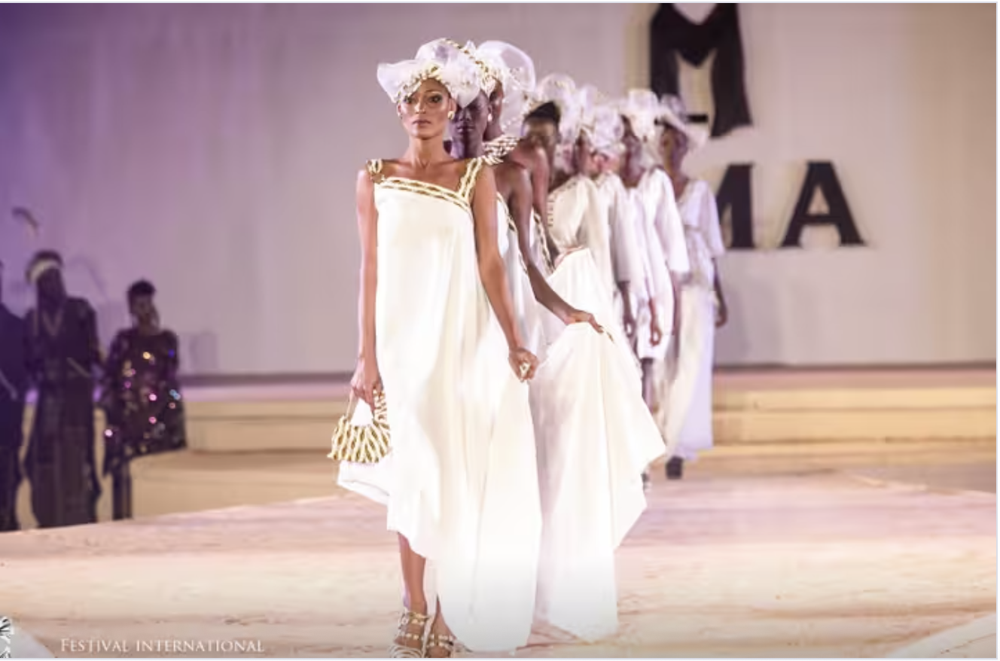

Festival International de la Mode Africaine
Un rendez-vous incontournable de la créativité africaine fondé par le célèbre styliste Alphadi. Découvrez les plus grands créateurs, les artistes émergents et l’esprit du luxe afro-chic.
Réservez vos places